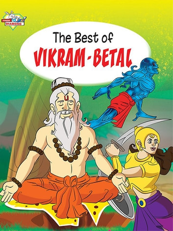

|

|
Why Wept, Why Laughed?
Only jeweler knows the value of gems
After a while Vaitaal said - "I am very happy with you Vikram, now I tell you
another surprising story. It is a real incident. I have witnessed it. There lived
a king, named Chandraveer, in the city of Chandrahridaya. He was a very
mighty king. He took a good care of his people. A rich man also lived in the
same city, his name was Dharmveer. He had daughter, her name was
Shobhanaa. She was very beautiful. Her father wanted to marry her, but she
had told him that whenever she would like any boy, she would tell him herself.
Dharmveer didn't speak anything after that.
Now, a day came that thefts started taking place in that city, but the thief
was not caught. Then the people requested Chandraveer. He sent all his
soldiers on vigilance, but still the thefts could not be stopped. People doubted
that the soldiers were with thieves. People again went to Chandraveer. This
time Chandraveer decided to vigil himself. This made his soldiers also honest.
After 3-4 days, when Chandraveer was roaming in the streets of the city, he
saw a man running away. "Go, and catch him." He ordered his soldiers.
Soldiers followed him and caught him. He was found with stolen goods. He
accepted that he was stealing till now and he was the thief. Next day it was
announced that the thief has been caught and he will be hanged tomorrow
after giving him a round of the city.
People got very happy to hear this news. Next day when the thief was taken
for the round in the city, all people came out to see him. When the thief was
passing in front of Dharmveer's house, Shobhanaa also saw him. She got
attracted to the thief. She immediately went to her father and told him that
she wanted to marry him and he should be saved. Dharmveer got stunned to
hear this. He tried to explain her but she did not listen to.
Shobhanaa said - "I have chosen him my husband. If he was hanged I will
become Satee with him." Hearing this he went to the king and requested him
to free the thief. The king got surprised to hear this, he said - "What are
you saying? How can it be possible? The thief has to be punished, otherwise
what my people will say?" Dharmveer came back home disappointed. Shobhanaa
was adamant on her decision. Dharmveer tried to explain to her but she didn't
listen to it.
This news spread all over the city. The thief also heard this. When he heard
it, he started weeping. Then the time came to hang him. The whole city was
present there. The thief was brought at the place where he was to be
hanged. The then Shobhanaa also came there. She announced that she had
chosen the thief as her husband, that is why she would become Satee with
him. When the thief heard this he laughed. After that he was hanged. Hey
Raajan, Shobhanaa became Satee carrying his dead body in her laps. She kept
her promise.
I have seen this incident myself, still I am not able to understand that why
the thief first wept hearing the news of Shobhanaa's love; and why did he
laugh at hearing Shobhanaa's becoming Satee with him. In fact it should have
been otherwise. He should have laughed at the first time and wept at the
second time.
Vikram said - "Vaitaal, Only the jeweler knows the value of gems. When the
thief came to know that the rich man's daughter Shobhanaa loved him, he
wept, because he thought, if this had happened before, he could be reformed;
second time he laughed because of the foolishness of Shobhanaa. He knew
that it was only a part of her womanish character."
Vikram got silent after saying this. He had held Vaitaal tightly that suddenly
Vaitaal laughed heartily in that dark night and said - "You are right, Vikram."
and ran away from his shoulder. Vikram again pulled Vaitaal from the tree,
put him on his shoulder and started walking. He said - "If you will runaway
like this, I will cut your head." Vaitaal again laughed and said - "No Vikram,
You cannot do this, because if you will cut my neck then what will you take to
that Yogee?" and he again ran away. Vikram went away to that Yogee without
taking Vaitaal.
|